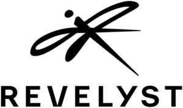

Trade Mark Journal No.2025/018 2 May 2025
WO0000001820995 (4,7,8,9,11,12,13,18,21,25,28)
Office of origin: United States of America
Date of International Registration:3 April 2024
Date of designation in the UK:
3 April 2024

The mark consists of the stylized wording "REVELYST" below a stylized image of a dragonfly.
International priority date claimed: 5 October 2023
(United States of America)
(98210404)
- Class 4
- Lubricants used in cleaning and maintaining guns; lubricating gun grease for cleaning and maintaining guns; gun cleaning cloths impregnated with lubricants for cleaning and maintaining guns; wood chips in the form of pellets for smoking foods; lubricants for resizing cases.
- Class 7
- Mechanically operated tools, namely, burring tools; electric cleaning units, namely, vibratory case cleaners for use in cleaning ammunition casings; industrial machine presses and press accessories, namely, reloading presses for use in making bullets for weapons and firearms and dust covers for ammunition reloading presses; power operated tools, namely, burring tools.
- Class 8
- Utility belt for fly fishing; hand tools for use in tying artificial fishing flies, namely, vises, tweezers, clippers and extractors; hand tools, namely, hand primers, primer strips, strip loaders, die lock-ring wrenches and hex key wrench sets for use with ammunition; tactical knives for military and defense application; hand tools for repair and maintenance of bicycles; multi-function hand tools comprised primarily of hand tools for repair and maintenance of bicycles.
- Class 9
- Helmets for mountain biking and motocross activities; protective helmets for motorized activities; protective helmets for sports; bicycle helmets; safety helmets; replacement parts therefor for all the foregoing; protective clothing for cyclists, motorcyclists and motorists for protection against accident or injury, namely, protective back pads, knee pads, protective pads for shoulders and elbows, protective suits, protective chest pads, and protective gloves; eyewear; protective eyewear; sports eyewear; spectacles and sunglasses; sports goggles and non-prescription lenses for sports goggles; goggles for use in motorcycling, bicycling, snow sports and action-sports activities; protective face masks for the prevention of accident or injury not for medical purposes; face-protection shields for use in sports; portable audio speakers for use in the field of outdoor sport activities; wireless speakers for use in the field of outdoor sport activities; handheld electronic devices to provide players with course information and features of interest on a golf course; protective ear coverings; noise cancelling headphones; personal headphones for use with sound transmitting systems; protective noise reduction earwear that electronically compress sound and protect hearing in high noise level environments; protective glasses for use by hunters and shooters; protective eyewear for use by hunters and shooters; carrying cases and holders for binoculars and laser rangefinders; binocular harnesses; harness adapted for carrying optical products, namely, binoculars and laser rangefinders; rifle scopes; binoculars; spotting scopes; optical red dot sights for firearms; laser rangefinders; monoculars; reflector sights for firearms; trail cameras; monopods, bipods, and tripods for hunting scopes, spotting scopes, and laser rangefinders; electronic sports training simulators for simulating golf play; portable electronic devices for monitoring and analyzing ball movement in sports; wearable global positioning system (GPS) for golf, namely, a device pre-loaded with golf course maps designed to track a player's progress and shot distances; golf accessories in the nature of magnetic mounting devices for range finders sold as a component of the range finders; tactical gear and tactical equipment for military, law enforcement and defense applications, namely, protective clothing with built in armor or having the ability to insert armor for protection against accident or injury; protective load bearing vests reinforced with or without ballistic armor for holding tactical equipment; ammunition reloading equipment, namely, measuring apparatus for apportioning and dispensing gunpowder used for reloading gunpowder into firearm casings; thermometers; bicycle speedometers, odometers and computers; global positioning receiver for use in navigation, hunting and sports.
- Class 11
- Wood pellet grills; portable propane gas stove; barbecue grills; barbecue smokers; outdoor gas fired grills; gas fired camp stoves; gas fired barbecue grills, all for domestic use; controllable pellet auger sold as a component part of gas stoves, gas grills, gas smokers, pellet stoves, pellet grills, pellet smokers, and replacement parts and fittings therefor; fitted covers for barbecue grills; carrying bags specially adapted for portable stoves, grills, griddles, ovens and dutch ovens; accessories for portable stoves, grills and ovens, namely, grill boxes, lid holders, lightsand shelves; barbecue smoker cooking grates; cooking grates adapted for barbecue grills; portable fireplaces and firepits; gas water heaters; cooking ovens for sandwiches, cooking presses and popcorn poppers; furnaces for melting metals; flashlights; personal hand-held lights; personal lights for attachment to clothing, gear, or backpacks; lights mounted on weapons; lights for firearms; lights used for bicycles, namely, headlights, rear flashers and tail lights; bicycle reflectors.
- Class 12
- All terrain all electric mountain bikes; electric bicycles; bicycle trailer; cargo trailers; rack trunk bags for bicycles; pannier bags for bicycles; bicycle rack packs; luggage racks for bicycles; bicycle fenders; travel cases for folding bicycles; truck accessories, namely, tailgate pads specifically adapted for truck tailgates for carrying bicycles; bicycle accessories, namely, floor pumps, frame pumps, mini-pumps, bicycle racks for vehicles, rearview mirrors, water bottle cages, and bicycle tool kits; bicycle tires; bags adapted for bicycles; baskets adapted for bicycles; bicycle bells; bicycle horns; bicycle kickstands; bicycle training wheels; safety pads for bicycles; a child carrier seat that attaches over the rear wheel of a bicycle intended for use by infants and toddlers; child carrying trailers for use in transporting children that attach to land vehicles; motorized and computerized golf carts; motorized personal mobility scooters; motorized, electric-powered, self-propelled, self-balancing, wheeled personal mobility transportation device; motorized, self-propelled, wheeled personal mobility device, namely, scooters; kayaks, inflatable kayaks; motorized sea scooters; motor scooters; motorized water scooters; underwater scooters; motorized vehicles, namely, vehicles for use in water sports and as underwater diver propulsion vehicles; personal watercrafts in the nature of a water propelling apparatus; parts and accessories for the aforementioned goods.
- Class 13
- Holsters; holster belts; plastic bags specially adapted for storing firearms, featuring volatile corrosion inhibitors; weapon cases for firearms; range bags for holding weapons; gun stocks; grips for firearms; bipods for firearms; mounts for attaching accessories to a firearm; rings and bases for use with firearms; non-telescopic gun sights for firearms; swivels for guns; personal defense sprays; shooting accessories, namely, shooting mats and gun rests; recoil pads; belts for military equipment; cartridge belts and pouches; gun belts and pouches; shell belts and pouches; shot belts and pouches; woven belts for military equipment; rifle straps; sling straps for firearms; cases and containers for gun bore cleaning products, namely, brushes; cleaning implements for firearms, namely, rods, brushes, rod adapters, muzzle guards, bore guides, gun cleaning mops, gun cleaning wipes, and gun cleaning tips and jags; targets; gun cleaning bore brushes; reloading presses; powder measures; powder scales; reloading dies; bullet pullers; case forming dies; case gauge trim dies; stuck case removers; automatic primer feeds; primer arms; powder tricklers; powder spoons; case lube kits; case lube pads; case neck brushes; shell holders.
- Class 18
- All-purpose carrying bags; tool bags sold empty; umbrellas; Daypacks; travel cases; backpacks; sports packs; waterproof sports bags; knapsacks; rucksacks; thermal insulated backpacks; backpacks compatible with personal hydration systems sold empty; chest packs; dry bags; duffle bags; fanny packs; gear bags; handbags; hip bags; belt bags; hip packs; saddle bags; sling bags; tote bags; wader bags; luggage; traveling bags; rolling gear bags; rolling travel bags; wallets; purses.
- Class 21
- Hydration systems comprised of a drinking fluid reservoir, a drinking delivery tube, and a mouthpiece; drinking reservoirs for hydration systems comprised of a drinking fluid reservoir, a drinking delivery tube, and a mouthpiece; drinking flasks for travelers; portable beverage dispenser; non-electric portable coolers worn as backpacks; non-electric portable coolers; coolers, namely, portable ice chests for food and beverages; backpack style canteens; reusable stainless steel water bottles sold empty; sports bottles sold empty; squeeze bottles sold empty; reusable plastic water bottles sold empty; backpack hydration systems, namely, hydration packs containing a fluid reservoir, delivery rube, and mouthpiece; drinkware; beverageware; cups, mugs; stainless steel cups, mugs, stainless steel beverageware; insulated mugs; skillets; cookware made of cast iron, steel, or aluminum, namely, skillets, pans, dutch ovens, pots and pot lids; non-electric griddles; dutch oven accessories, namely, stands, lid lifters, and lid holders; cooking utensils, namely, pan scrapers, spatulas, skimmers, meat turners, roasting sticks, and lid holders; garbage cans; grills, namely, camping grills.
- Class 25
- Apparel, namely, jackets, rain jackets, coats, vests, sweatshirts, jerseys, shirts, t-shirts, tank tops, pants, tights, shorts, headbands, neck gaiters, swimwear, gloves, belts, shoes, sandals, flip flops for use as footwear, boots and socks; gloves for motorcyclists and cyclists; jerseys for motorcyclists and cyclists; pants for motorcyclists and cyclists; jackets for motorcyclists and cyclists; boots for motorcyclists; athletic apparel, namely, shirts, pants, jackets, footwear, hats and caps; arm warmers; clothing for athletic use, namely, padded pants and padded shorts; footwear, namely, cycling shoes and athletic shoes; clothing made for and marketed to the fishing industry, namely, headwear, pants, shirts, sweatshirts, coats, socks, gloves, balaclavas, gaiters, gaiters for protection from the sun, sun sleeves, hoodies, pullovers; fishing waders; wading boots; fleece tops and bottoms; long underwear; hats; caps; beanies; hunting clothes and accessories, namely, vests, gloves, hats, shirts, pants, jackets, coats and headwear.
- Class 28
- Wrist guards for athletic use; shin guards for athletic use; knee guards for athletic use; elbow guards for athletic use; all of the foregoing for motocross, bicycling, and mountain bike riding; protective padding for bicycling; hunting blinds, field blinds used in hunting; camouflage screens for hunting purposes; game calls; electronic hunting game calls; hunting game calls; archery arrows; archery accessories, namely, stabilizers, counterbalances, mounting hardware, extensions, weights and accessories for stabilizing and balancing compound hunting bows and competitive archery bows; archery equipment, namely, arrows for hunting and archery and parts, attachments and components for arrows, namely, shafts, points, inserts, fletching, vanes, notches, and crest wraps; shot and shooting sporting articles, namely, firearm aiming targets, targets, clay targets, clay pigeons, target stands and target holders; boxes or cases for absorbing bullets, namely, traps; target launchers for trap, skeet, and clay pigeon shooting; parts and accessories for the aforementioned goods; exercise equipment, namely, stationary cycles; indoor bicycle trainers; paddleboards; paddleboard leashes; paddleboard fins; surf boards; bags made for and marketed to the fishing industry, namely, fishing tackle bags; chest packs, namely, fishing tackle packs designed to be worn on the chest while wading and fishing; hip packs, namely, fishing tackle packs designed to be worn around the abdomen while wading and fishing; fishing fly boxes; fishing reel covers.
Revelyst Operations LLC
Representative: HGF Limited, 1 City Walk Leeds LS11 9DX UNITED KINGDOM